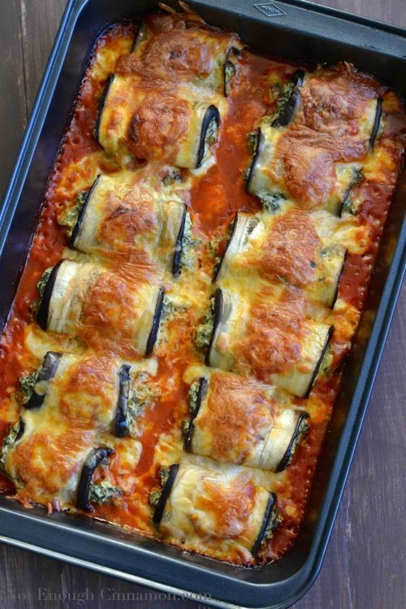
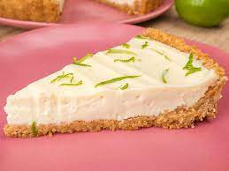

Receita 1 - Lasanha de berinjela
Você precisará de berinjelas, carne moída, cebola, alho, molho de tomate, queijo parmesão e mussarela. Basta refogar a carne moída, cebola e alho em uma frigideira, adicionar o molho de tomate e fazer camadas alternadas de berinjela, molho de carne e queijos em uma forma refratária. Leve ao forno por 30 minutos e voilà, sua lasanha de berinjela está pronta!
Receita 2 - Salmão grelhado com legumes
Você precisará de filés de salmão, abobrinha, cenoura, pimentão vermelho, cebola roxa, alho, azeite de oliva, sal e pimenta. Tempere o salmão com sal e pimenta e grelhe até que esteja cozido. Refogue os legumes no azeite de oliva e alho até que estejam macios, tempere com sal e pimenta e sirva com o salmão.
Receita 3 - Torta de limão

Você precisará de bolacha maisena triturada, manteiga, leite condensado, suco de limão, gemas de ovo, chantilly e raspas de limão para decorar. Misture a bolacha triturada com a manteiga derretida e pressione no fundo de uma forma de torta. Leve à geladeira por 30 minutos. Em uma tigela, misture o leite condensado, suco de limão e gemas de ovo. Despeje a mistura sobre a base de bolacha e leve à geladeira por mais 30 minutos. Cubra com chantilly e decore com as raspas de limão antes de servir.